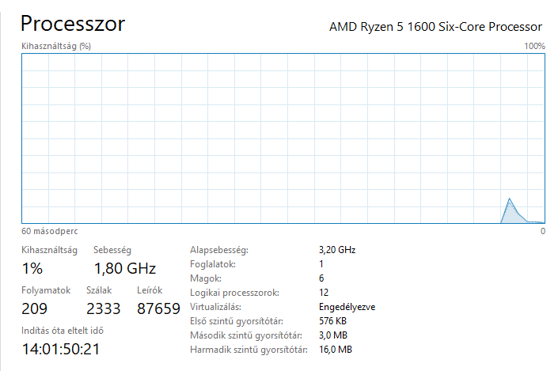
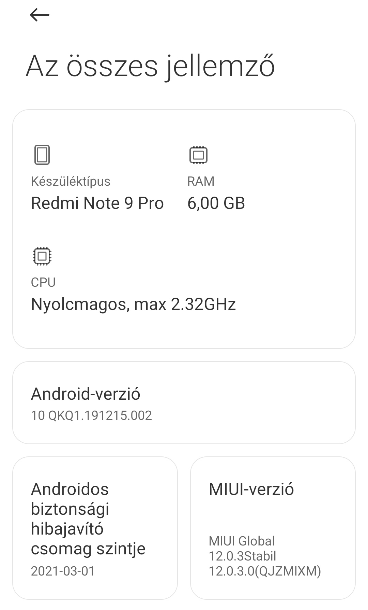
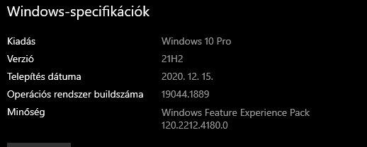
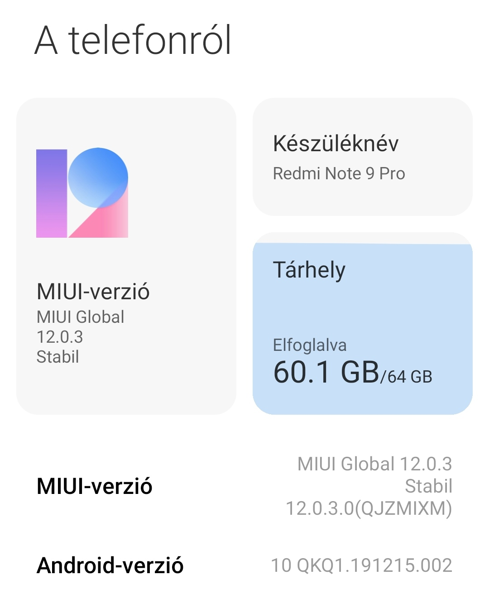
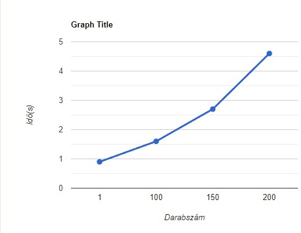
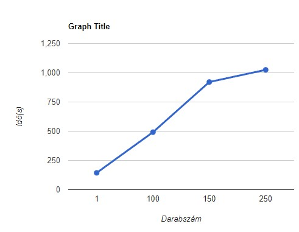

4.1
A)
Asztali gép paraméterei
Processzor magok száma:

Óra jel frekvencia[kHz]: alap sebesség 3200000 kHz (3.2 GHz)
Interfészek száma és típusa: 2x USB 2.0, USB 3.0, WGA port, HDMI input, Realtek Wireless lan PCI-E NIC.
B)
Mobil telefon paraméterei
Processzor magok száma:

Óra jel frekvencia[kHz]: 2320000 kHz (2.32 GHz)
Interfészek száma és típusa: Bloetooth,wifi.
4.2
A)
Asztali gép operációs rendzser paraméterei
Típus: Windows 10 Pro
Verziószám: 21H2

Futó processzek száma: 110
CPU terhelés: 1%
B)
Mobil telefon operációs rendzser paraméterei
Típus: Android 10
Verziószám: MIUI-verzió 12.0.3

Futó processzek száma:
CPU terhelés:
4.3
A)
Optikai csatlakozó típusok(méret szerint növekvő): SMA,ST,SC,FC,LC,MU,MTRJ,FDDI
B)
Az asztali gép NIC csatorna-érzékenysége:
4.4
A)

B)
Minnél több fájl van annál lassab a másolás
4.5
A)

B)
Minnél több fájl van annál lassab a másolás